Skin
Medical-Grade Skincare: Is It Really Different?
[ARTICLE CONTENT TO BE PROVIDED]
Skin Health
Better Skin Starts With Better Information
With endless products, ingredients, routines, and trends competing for your attention, figuring out what your skin actually needs can feel overwhelming. Isabelle takes a more personalized approach.
From medical-grade skincare to prescription solutions, she can help you build a routine based on your skin, your concerns, and your goals—without filling your shelf with products you don't need.

Skin Health
Skincare doesn't need to be complicated. Isabelle helps patients move beyond trends and trial-and-error by taking a more personalized approach to skin health.
For some skin concerns, prescription skincare may provide options beyond traditional over-the-counter products. Depending on your individual needs, Isabelle can help determine whether prescription skincare is appropriate and provide guidance on incorporating it into your routine.
A personalized skincare consultation gives you an opportunity to discuss your skin, current routine, concerns, and goals with Isabelle. From acne and pigmentation to texture, dryness, and visible signs of aging, she can help you build a realistic routine using products selected with your individual skin in mind.
Great skincare isn't about having more products. It's about having the right ones. Isabelle can help you understand medical-grade skincare, active ingredients, and how different products may fit into an effective routine. Explore her recommendations and shop products through her Skin Clique storefront.
Shop My Skincare
Products Isabelle recommends are available through her Skin Clique storefront. [SELECTED PRODUCTS / CATEGORIES TO BE PROVIDED BY ISABELLE]
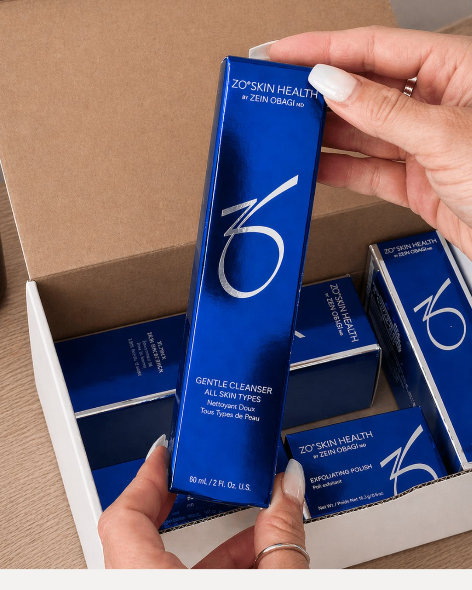
Gentle, effective cleansing selected for your skin type. [PRODUCT DETAILS TO BE PROVIDED]
Daily protection and support for tone and radiance. [PRODUCT DETAILS TO BE PROVIDED]
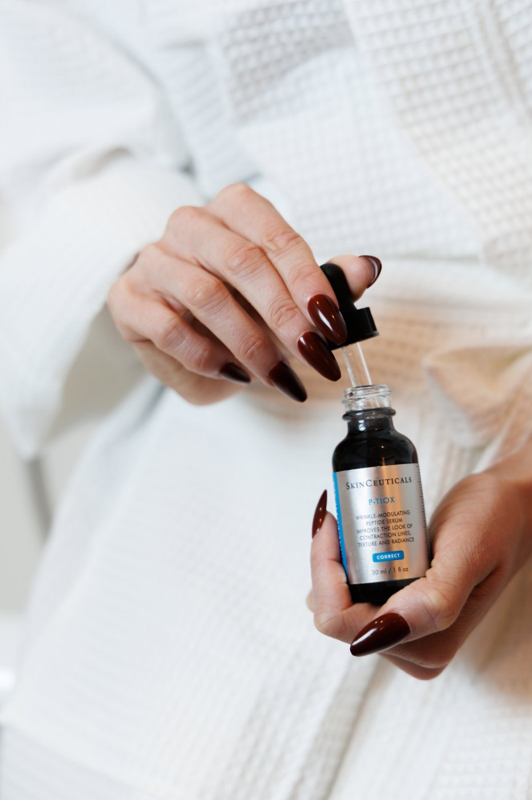
Retinoids and pigment-focused products when appropriate for your skin. [PRODUCT DETAILS TO BE PROVIDED]
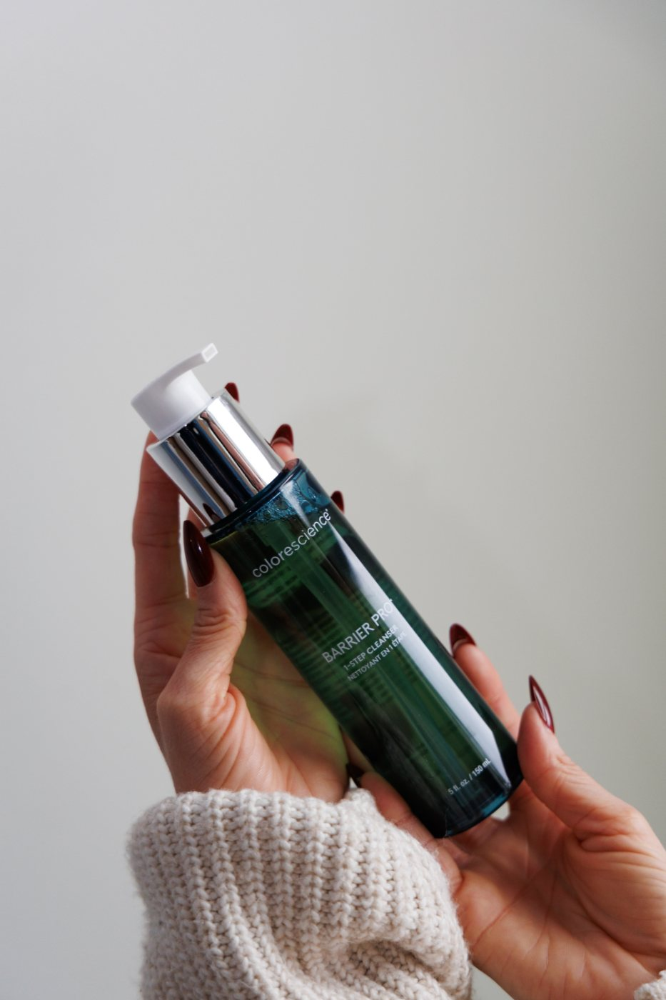
Moisturizers and barrier support to round out a realistic routine. [PRODUCT DETAILS TO BE PROVIDED]
Purchases are completed securely on Skin Clique. This website does not process orders.
Before + After
Prescription and medical-grade skincare results from Isabelle's patients.
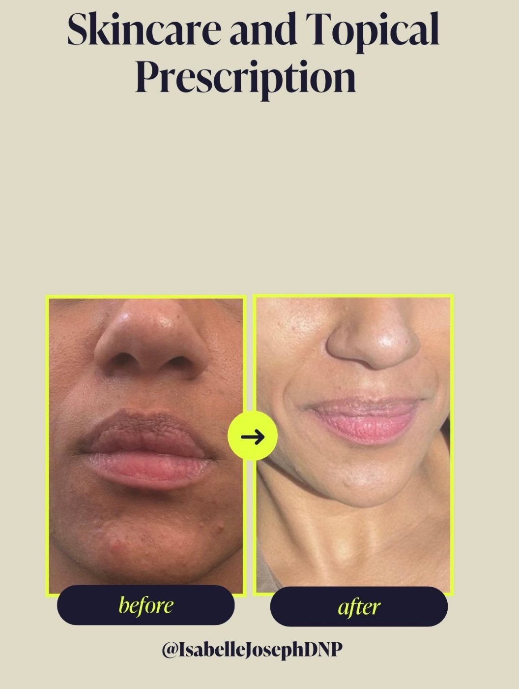
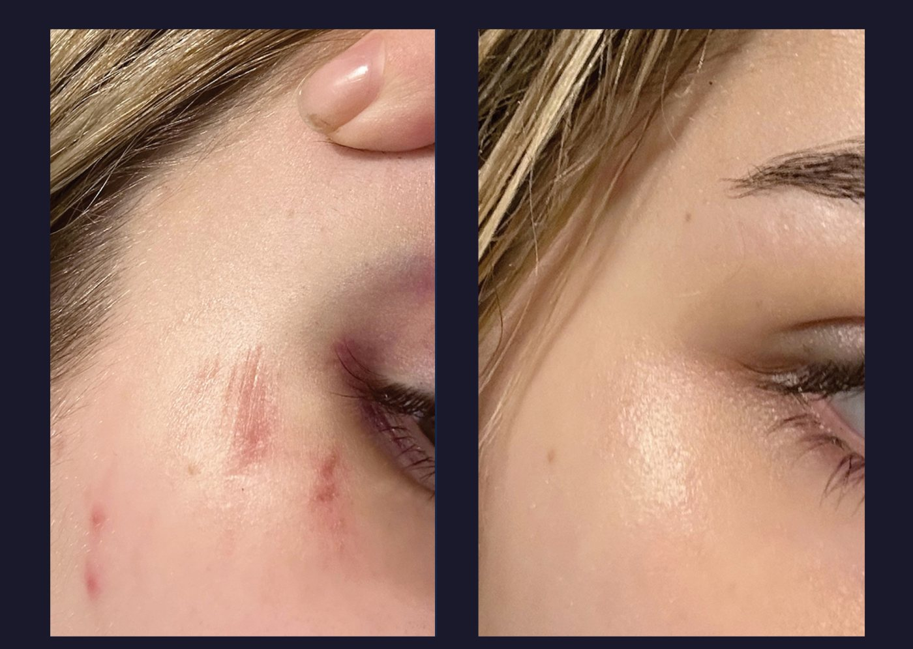
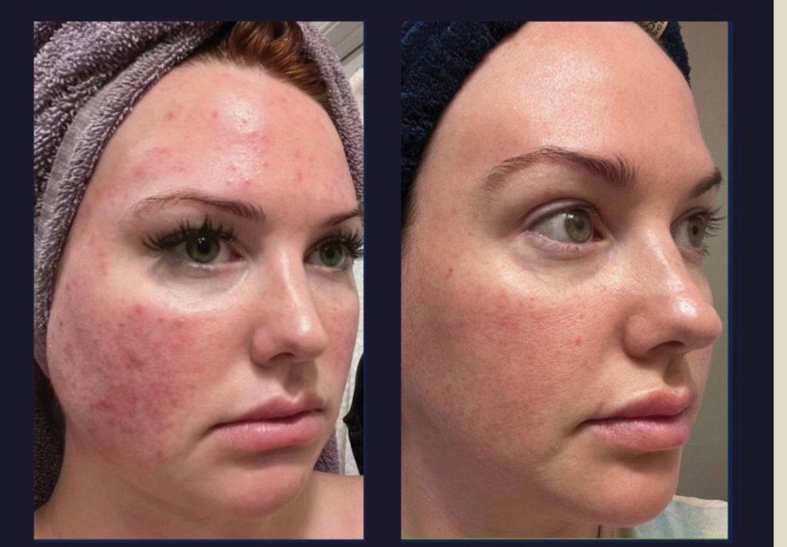
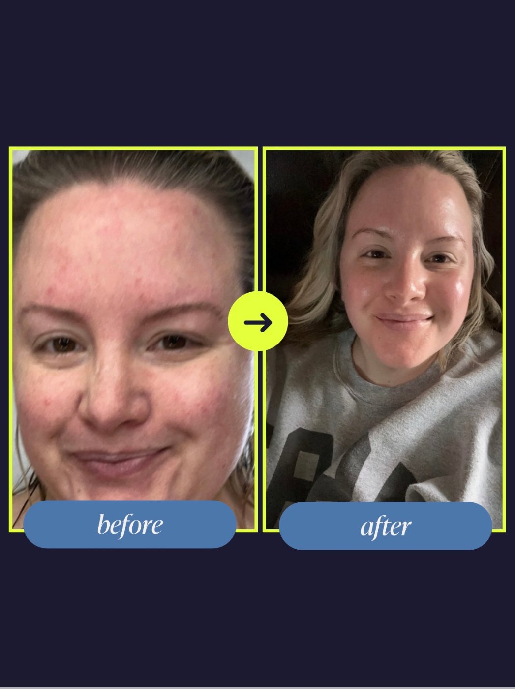
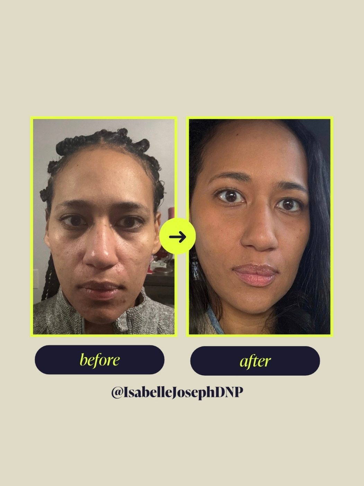
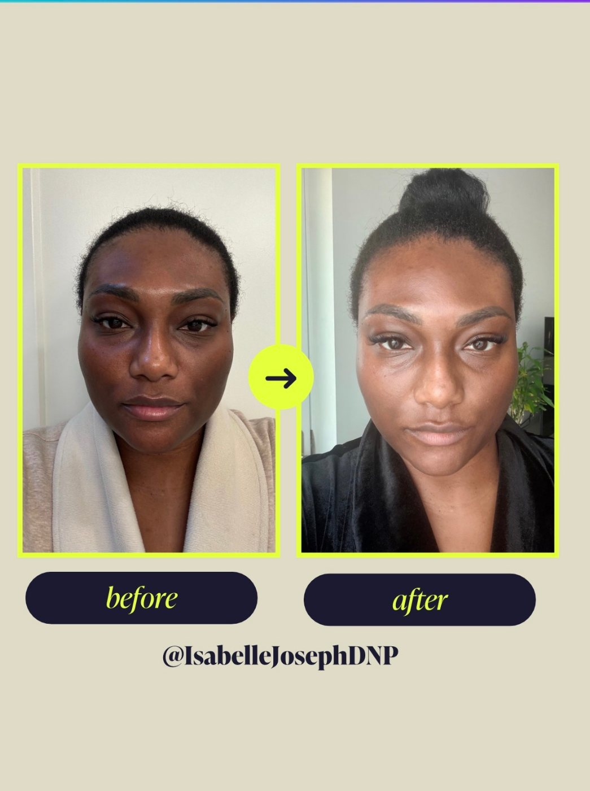
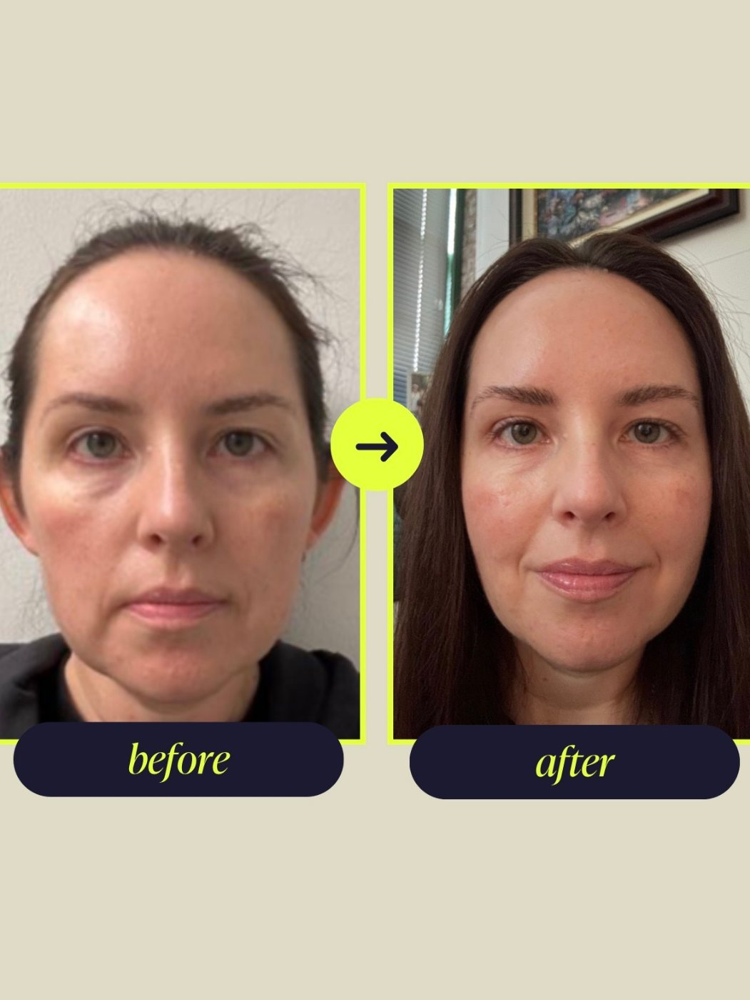
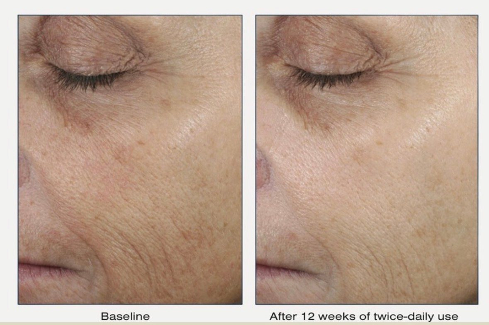
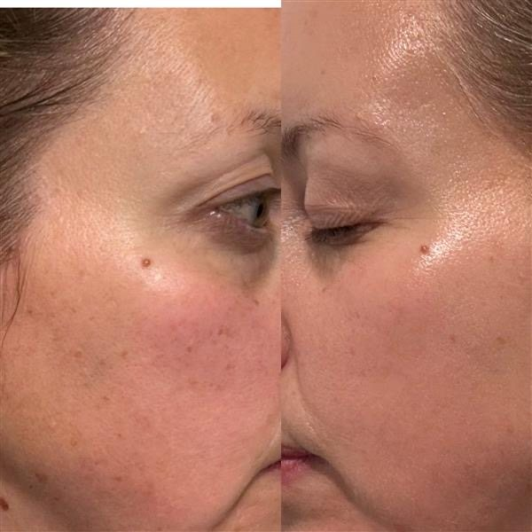
Individual results vary. Photos are shared to illustrate the areas Isabelle treats, not to promise a specific outcome.
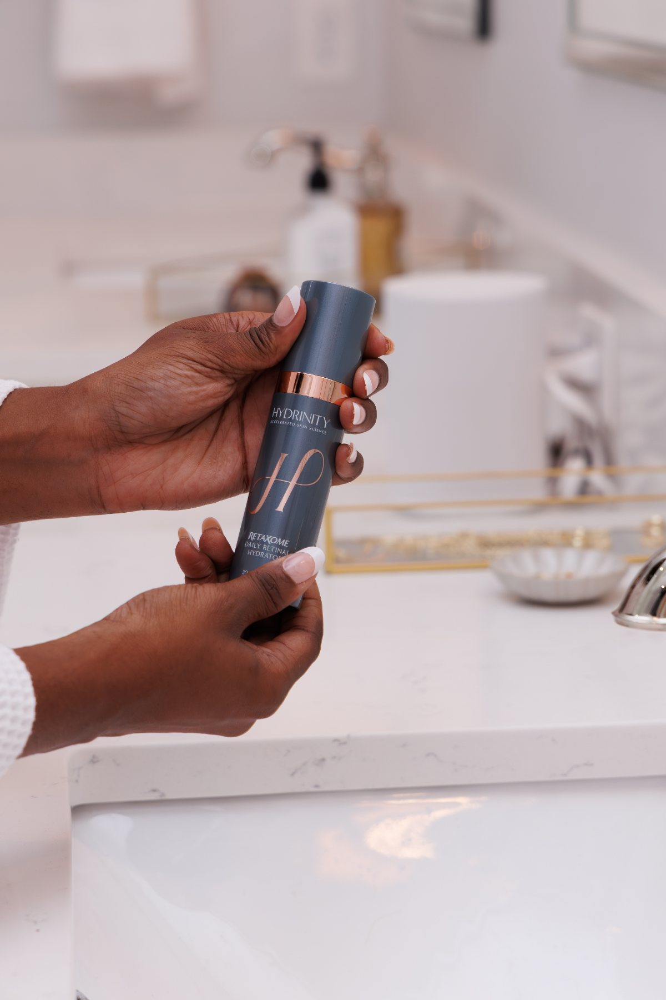
Skincare Philosophy
Isabelle has a particular passion for medical-grade skincare and helping patients understand what their skin actually needs.
Through personalized skincare consultations, medical-grade products, and prescription skincare options when appropriate, she helps patients create realistic routines based on their individual skin concerns and goals.
Your everyday routine also plays an important role in protecting your skin and supporting your goals between professional treatments such as chemical peels. Isabelle can help you determine which cleansers, antioxidants, moisturizers, retinoids, pigment-focused products, and sun protection may make sense for your individual skin.
Education
Skin
[ARTICLE CONTENT TO BE PROVIDED]
Start with a consultation, or shop Isabelle's curated recommendations on Skin Clique.